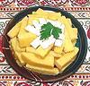
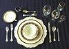

© Clovegarden
2004 2022
Clovegarden - an International Food Site
Welcome to Clovegarden, our ever-evolving non-commercial food site. We feature information about thousands of ingrediens used around the world, cooking methods, kitchen equipment and worldwide recipes. We hope you enjoy the site and find it useful, or at least entertaining.
PhilosophyHere you will find the principles that guide the structure and and
content of this site, as expound on wonderful food created with
affordable and widely available ingredients.
Ingredients
On our world famous pages you will find information on ingredients from the
most common through the most exotic - what they are, who uses them, how
to buy, store and use them, and substitutions when needed. Our
Search Engine will help you
find them under many names.
Kitchen Gear
Here we have notes on various important kitchen tools, as well as some
obscure ones. We review how they are used and the good points and bad
points of various tools.
Diets
People adhere to certain diets due to religious conviction, ethics,
economic realities, medical necessity, or just plain perversity. Here
we describe a number of diets adhered to for any of those reasons.
|

Recipes-
We present well over 1000 international recipes, every one of which we
have tested, liked and written up in logical sequence with the details
you will need to get it right the first time. We include copious notes
for each recipe regarding its origin and various ways it's made.
Depending on what you are looking for, we suggest using the most
appropriate index.
Recipes by RegionRecipes by IngredientsRecipes by UseWorldwide Party MenusTable Service
Here we describe the evolution of the Western table service, and also
describe the features of a number of non-Western table services.
Our Blog
We don't have a bog - we don't have enough resources to both maintain
a bog and continue developing at a good pace. If you have something to
say, email to agryg@clovegarden.com.
|